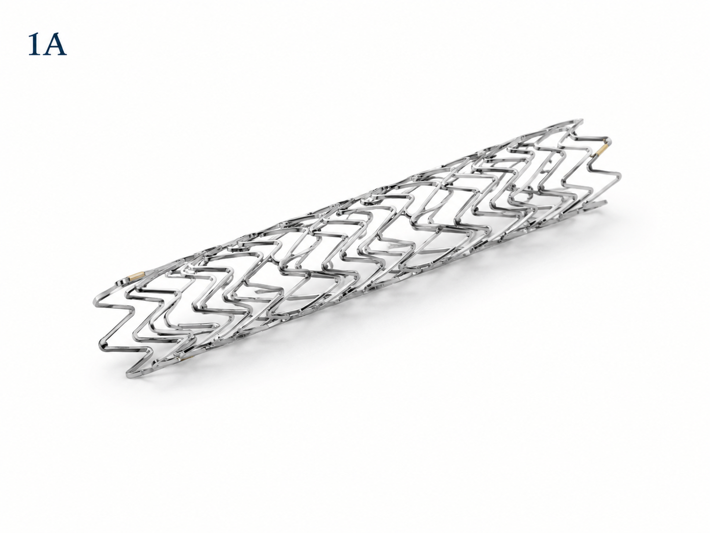

Família de produto
Stents
Os stents coronários são dispositivos utilizados em procedimentos de intervenção cardiovascular para auxiliar na manutenção da abertura dos vasos tratados. Essa linha reúne soluções voltadas ao suporte de procedimentos coronários, com foco em desempenho, segurança e precisão durante a prática médica especializada.
Ver especificações técnicas